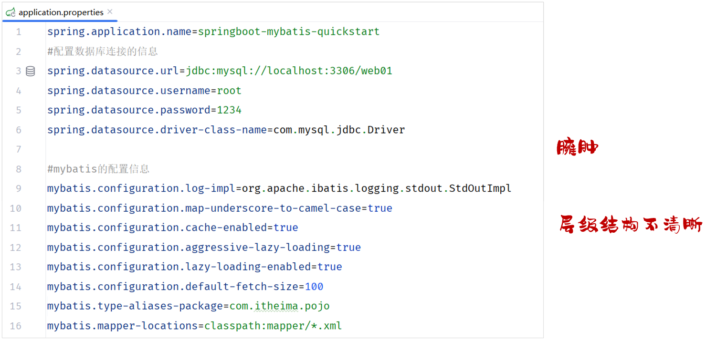
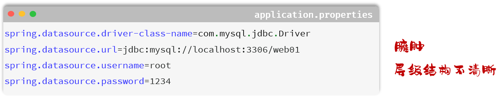
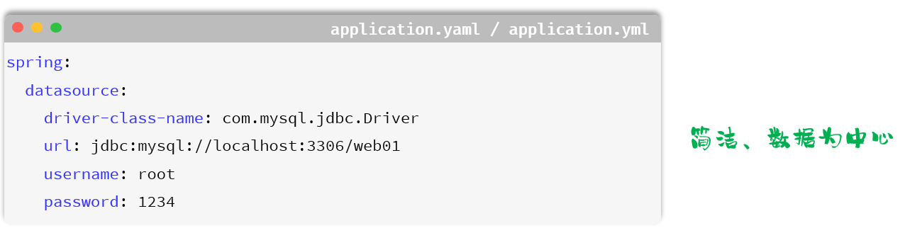
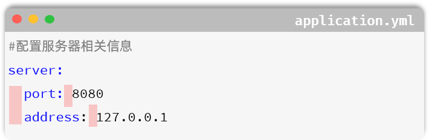
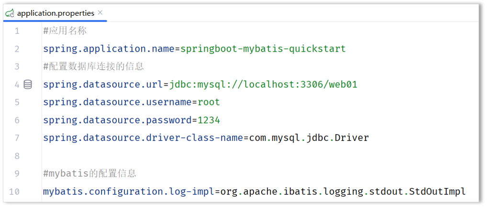
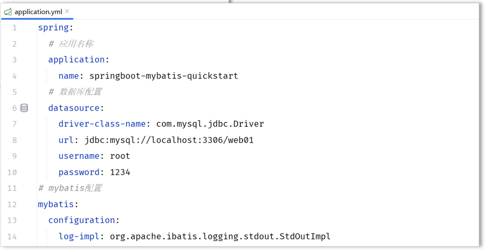

Spring Boot：YAML 配置
SpringBoot配置文件
介绍
前面我们一直使用springboot项目创建完毕后自带的application.properties进行属性的配置，而如果在项目中，我们需要配置大量的属性，采用properties配置文件这种 key=value 的配置形式，就会显得配置文件的层级结构不清晰，也比较臃肿。

那其实呢，在springboot项目当中是支持多种配置方式的，除了支持properties配置文件以外，还支持另外一种类型的配置文件，就是我们接下来要讲解的yml格式的配置文件。yml格式配置文件名字为：application.yaml , application.yml 这两个配置文件的后缀名虽然不一样，但是里面配置的内容形式都是一模一样的。更推荐使用.yml后缀的文件
我们可以来对比一下，采用 application.properties 和 application.yml 来配置同一段信息(数据库连接信息)，两者之间的配置对比：


在项目开发中，我们推荐使用application.yml配置文件来配置信息，简洁、明了、以数据为中心。
语法
简单的了解过springboot所支持的配置文件，以及不同类型配置文件之间的优缺点之后，接下来我们就来了解下yml配置文件的基本语法：
- 大小写敏感
- 数值前边必须有空格，作为分隔符
- 使用缩进表示层级关系，缩进时，不允许使用Tab键，只能用空格（idea中会自动将Tab转换为空格）,idea会自动将table键缩进直接转化为空格 , 数量不重要 ;
- 缩进的空格数目不重要，只要相同层级的元素左侧对齐即可
#表示注释，从这个字符一直到行尾，都会被解析器忽略

了解完yml格式配置文件的基本语法之后，接下来我们再来看下yml文件中常见的数据格式。在这里我们主要介绍最为常见的两类：
- 定义对象或Map集合
- 定义数组、list或set集合
- 对象/Map集合
user:
name: zhangsan
age: 18
password: 123456
- 数组/List/Set集合
hobby:
- java
- game
- sport
在yml格式的配置文件中，如果配置项的值是以 0 开头的，值需要使用 '' 引起来，因为以0开头在yml中表示8进制的数据。
案例(idea太方便了)
熟悉完了yml文件的基本语法后，我们修改下之前案例中使用的配置文件，变更为application.yml配置方式：
- 修改application.properties名字为：
_application.properties（名字随便更换，只要加载不到即可） - 创建新的配置文件：
application.yml
- 原有的
application.properties配置文件

- 新建的
application.yml 配置文件

配置文件的内容如下：
#数据源配置
spring:
datasource:
driver-class-name: com.mysql.cj.jdbc.Driver
url: jdbc:mysql://localhost:3306/web01
username: root
password: root@1234
#mybatis配置
mybatis:
configuration:
log-impl: org.apache.ibatis.logging.stdout.StdOutImpl